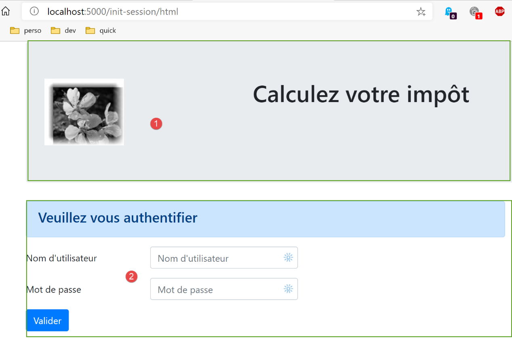
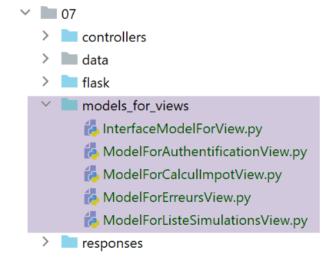
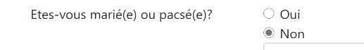
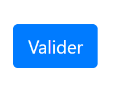
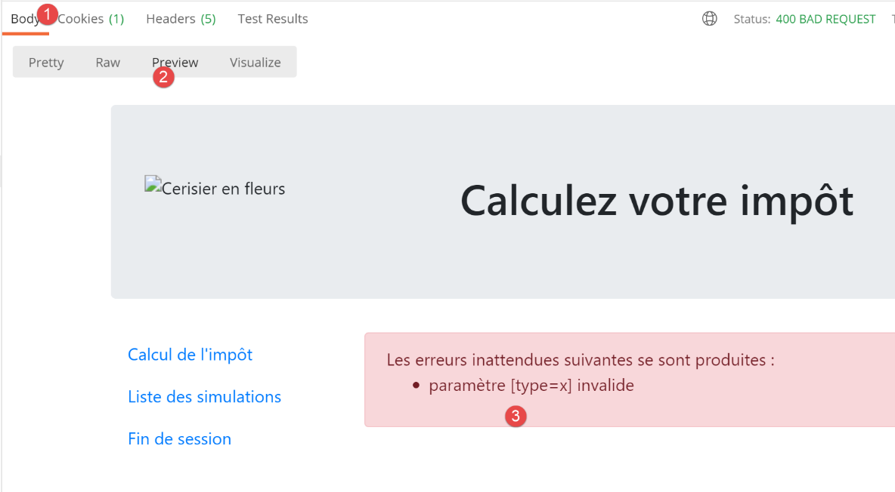
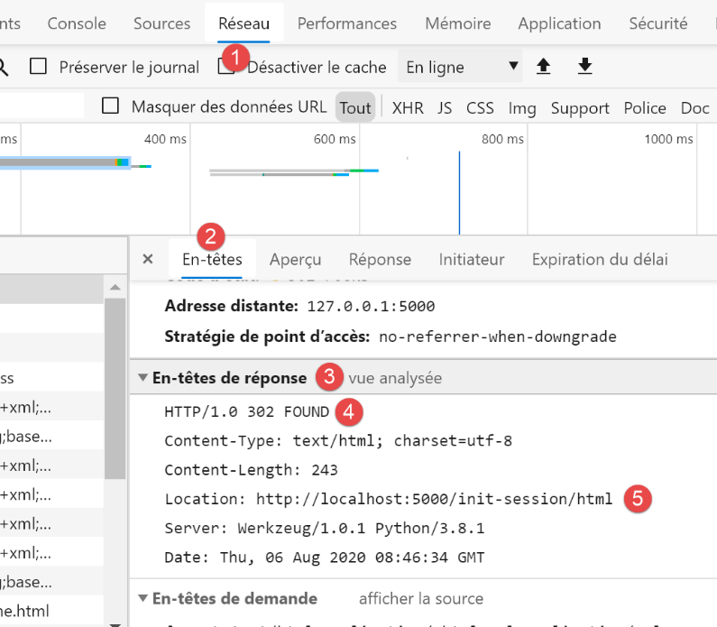
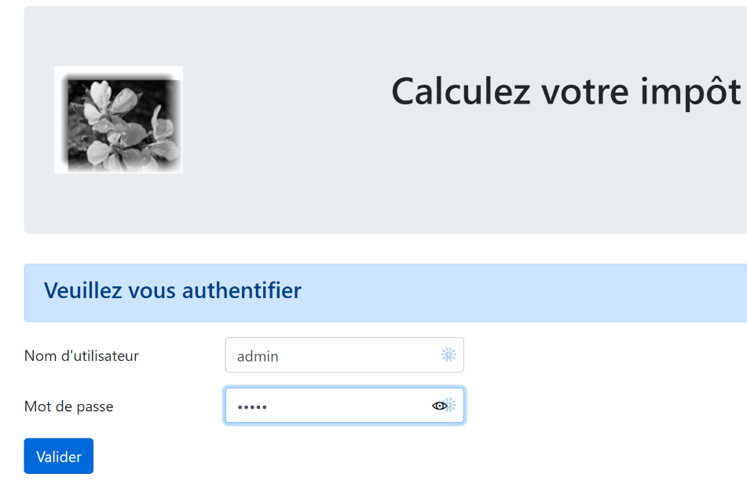
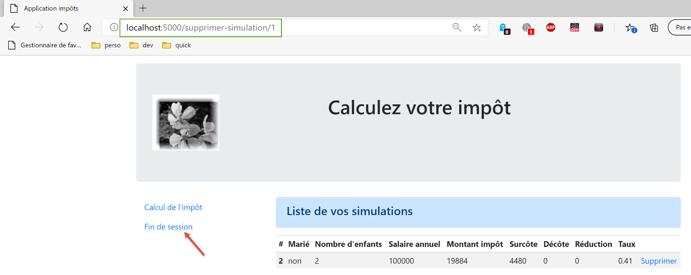

32. HTML mode in version 12
We mentioned at the beginning of Version 12 that we would be developing the application in several phases. We wrote:
- Based on the views of the HTML application, we will define the actions that the web application must implement. We will use the actual views here, but these could simply be views on paper;
- Based on these actions, we will define the service URLs for the HTML application;
- we will implement these service URLs using a server that delivers JSON. This allows us to define the framework of the web server without worrying about the HTML pages to be delivered. We will test these service URLs with Postman;
- We will then test our JSON server with a console client;
- Once the JSON server has been validated, we will move on to writing the HTML application;
We have an operational JSON and XML server. We can now move on to the HTML server. We will see that it reuses the entire architecture developed for the JSON/XML server and adds HTML view management to it.
32.1. MVC Architecture
We will implement the MVC (Model–View–Controller) architectural pattern as follows:

The processing of a client request will proceed as follows:
- 1 - Request
The requested URLs will be in the form http://machine:port/action/param1/param2/… The [Main Controller] will use a configuration file to "route" the request to the correct controller. To do this, it will use the [action] field in the URL. The rest of the URL [param1/param2/…] consists of optional parameters that will be passed to the action. The "C" in MVC here refers to the chain [Main Controller, Controller / Action]. If no controller can handle the requested action, the web server will respond that the requested URL was not found.
- 2 - Processing
- The selected action [2a] can use the parameters that the [Main Controller] has passed to it. These may come from two sources:
- the path [/param1/param2/…] of the URL,
- from parameters posted in the body of the client’s request;
- When processing the user’s request, the action may require the [business] layer [2b]. Once the client’s request has been processed, it may trigger various responses. A classic example is:
- an error response if the request could not be processed correctly;
- a confirmation response otherwise;
- the [Controller / Action] will return its response [2c] to the main controller along with a status code. These status codes will uniquely represent the application’s current state. It will be either a success code or an error code;
- 3 - Response
- Depending on whether the client requested a JSON, XML, or HTML response, the [Main Controller] will instantiate [3a] the appropriate response type and instruct it to send the response to the client. The [Main Controller] will pass it both the response and the status code provided by the [Controller/Action] that was executed;
- if the desired response is of the JSON or XML type, the selected response will format the response from the [Controller/Action] that was provided to it and send it [3c]. The client capable of processing this response can be a Python console script or a JavaScript script embedded in an HTML page;
- if the desired response is of the HTML type, the selected response will select [3b] one of the HTML views [Vuei] using the status code provided to it. This is the V in MVC. A single view corresponds to a state code. This view V will display the response from the [Controller / Action] that was executed. It wraps the data from this response in HTML, CSS, and JavaScript. This data is called the view model. This is the M in MVC. The client is most often a browser;
32.2. The directory structure of the HTML server scripts

- in [1], the static elements of the HTML server;
- in [2-3], the HTML server views V. The fragments [2] are reusable elements within the views [3];
- in [4], a folder used for testing views statically;
- in [5], the folder for the M models of the V views, the M in MVC;
32.3. Overview of the views
The HTML web application uses four views. The first view is the authentication view:
- the action that leads to this first view is the [/init-session] action [1];

- clicking the [Validate] button triggers the [/authenticate-user] action with two posted parameters [2-3];
The tax calculation view:

- in [1], the action [/authenticate-user] that brings up this view;
- in [2], clicking the [Validate] button triggers the execution of the [/calculate-tax] action with three posted parameters [2-5];
- clicking the link [6] triggers the action [/list-simulations] without parameters;
- clicking the link [7] triggers the action [/end-session] without parameters;
The third view displays the simulations performed by the authenticated user:

- in [1], the action [/list-simulations] that brings up this view;
- in [2], clicking the [Delete] link triggers the action [/delete-simulation] with one parameter, the number of the simulation to be deleted from the list;
- clicking the [3] link triggers the [/display-tax-calculation] action without parameters, which re-displays the tax calculation view;
- Clicking the [4] link triggers the [/end-session] action without parameters;
The fourth view will be called the unexpected errors view:
- in [1]: the user typed the URL themselves. However, in this example, there were no simulations. We therefore receive the error message [2]. We are familiar with this message. We had it in JSON/XML. We will call this type of error an "unexpected error" because it cannot occur during normal use of the application. It is only when the user types the URLs themselves that they can occur;

- in the event of an unexpected error, the links [3-5] allow you to return to one of the other three views;
Let’s review the various service URLs for the JSON/XML server:
Action | Role | Execution Context |
/init-session | Used to set the type (json, xml, html) of the desired responses | GET request Can be sent at any time |
/authenticate-user | Authorizes or denies a user's login | POST request. The request must have two posted parameters [user, password] Can only be issued if the session type (json, xml, html) is known |
/calculate-tax | Performs a tax calculation simulation | POST request. The request must have three posted parameters [married, children, salary] Can only be issued if the session type (json, xml, html) is known and the user is authenticated |
/list-simulations | Request to view the list of simulations performed since the start of the session | GET request. Can only be issued if the session type (json, xml, html) is known and the user is authenticated |
/delete-simulation/number | Deletes a simulation from the list of simulations | GET request. Can only be issued if the session type (json, xml, html) is known and the user is authenticated |
/display-tax-calculation | Displays the HTML page for the tax calculation | GET request. Can only be issued if the session type (json, xml, html) is known and the user is authenticated |
/end-session | Ends the simulation session. | Technically, the old web session is deleted and a new session is created Can only be issued if the session type (json, xml, html) is known and the user is authenticated |
These various service URLs will also be used for the HTML server.
32.4. Configuring Views
An action is handled by a controller. This controller returns a tuple (result, status_code) where:
- [result] is a dictionary with keys [action, status, response];
- [status_code] is the status code of the HTTP response that will be sent to the client;
In an HTML session, the page displayed following an action depends on the status code returned by the controller. This dependency is reflected in the [config] configuration as follows:
# HTML views and their models depend on the status returned by the controller
"views": [
{
# authentication view
"states": [
# /init-session success
700,
# /authenticate-user failure
201
],
"view_name": "views/authentication-view.html",
"model_for_view": ModelForAuthentificationView()
},
{
# tax calculation view
"statuses": [
# /authenticate-user success
200,
# /calculate-tax success
300,
# /calculate-tax failure
301,
# /display-tax-calculation
800
],
"view_name": "views/tax-calculation-view.html",
"model_for_view": ModelForCalculImpotView()
},
{
# view of the list of simulations
"statements": [
# /list-simulations
500,
# /delete-simulation
600
],
"view_name": "views/simulation-list-view.html",
"model_for_view": ModelForListeSimulationsView()
}
],
# unexpected error view
"error-view": {
"view_name": "views/error-view.html",
"model_for_view": ModelForErrorsView()
},
# redirects
"redirects": [
{
"statuses": [
400, # /end-session success
],
# redirect to
"to": "/init-session/html",
}
],
}
- lines 2–40: [views] is a list of views. Let’s consider the view in lines 3–13:
- line 11: the displayed view V;
- line 12: the class instance responsible for generating the model M for this view;
- lines 5–10: the states that lead to this view;
- lines 3–13: the authentication view;
- lines 14–28: the tax calculation view;
- lines 29–39: the simulation list view;
- lines 42–46: the unexpected errors view;
- lines 49–57: Some statuses lead to a view via a redirect. This is the case for status 400, which corresponds to the successful [/fin-session] action. The client must then be redirected to the [http://machine:port/chemin/init-session/html] action;
We will now present the different views.
32.5. The authentication view

32.5.1. View Overview
The authentication view is as follows:

The view consists of two elements that we will call fragments:
- fragment [1] is generated by the fragment [v-banner.html];
- fragment [2] is generated by the fragment [v-authentication.html];
The authentication view is generated by the following page [vue-authentification.html]:
<!-- HTML document -->
<!doctype html>
<html lang="fr">
<head>
<!-- Required meta tags -->
<meta charset="utf-8">
<meta name="viewport" content="width=device-width, initial-scale=1, shrink-to-fit=no">
<!-- Bootstrap CSS -->
<link rel="stylesheet" href="https://maxcdn.bootstrapcdn.com/bootstrap/4.4.1/css/bootstrap.min.css">
<title>Tax Application</title>
</head>
<body>
<div class="container">
<!-- banner -->
{% include "fragments/v-banner.html" %}
<!-- two-column row -->
<div class="row">
<div class="col-md-9">
{% include "fragments/v-authentication.html" %}
</div>
</div>
<!-- if error - display an error alert -->
{% if model.error %}
<div class="row">
<div class="col-md-9">
<div class="alert alert-danger" role="alert">
The following errors occurred:
<ul>{{template.errors|safe}}</ul>
</div>
</div>
</div>
{% endif %}
</div>
</body>
</html>
Comments
- line 2: an HTML document begins with this line;
- lines 3–36: the HTML page is enclosed in the <html> and </html> tags;
- lines 4–11: the HTML document’s header (head);
- line 6: the <meta charset> tag indicates here that the document is encoded in UTF-8;
- line 7: the <meta name='viewport'> tag sets the initial viewport display: across the full width of the screen displaying it (width) at its initial size (initial-scale) without resizing to fit a smaller screen (shrink-to-fit);
- line 9: the <link rel='stylesheet'> tag specifies the CSS file that governs the viewport’s appearance. Here, we are using the Bootstrap 4.4.1 CSS framework [https://getbootstrap.com/docs/4.0/getting-started/introduction/] ;
- line 10: the title tag sets the page title:

- lines 13–35: the body of the web page is enclosed within the body and /body tags;
- lines 14–34: the <div> tag delimits a section of the displayed page. The [class] attributes used in the view all refer to the Bootstrap CSS framework. The <div class=’container’> tag (line 14) delimits a Bootstrap container;
- line 26: the fragment [v-banner.html] is included. This fragment generates the page’s banner [1]. We will describe it shortly;
- lines 18–22: the <div class=’row’> tag defines a Bootstrap row. These rows consist of 12 columns;
- Line 19: The tag defines a 9-column section;
- line 20: we include the fragment [v-authentification.html], which displays the page’s authentication form [2]. We’ll describe it shortly;
- lines 24–33: The HTML code in these lines is only used if [model.error] is True. We will always proceed this way: the model for an HTML view will be encapsulated in a dictionary [model];
- lines 24–33: Authentication fails if the user enters incorrect credentials. In this case, the authentication view is redisplayed with an error message. The [model.error] attribute indicates whether to display this error message;
- lines 27–30: define an area with a pink background (class="alert alert-danger") (line 27);

- line 28: some text;
- line 29: the HTML tag <ul> (unordered list) displays a bulleted list. Each list item must have the syntax <li>item</li>. Here, we display the value of [model.errors]. This value is filtered (for the presence of |) by the [safe] filter. By default, when a string is sent to the browser, Flask “escapes” any HTML tags it might contain so the browser doesn’t interpret them. But sometimes we want them to be interpreted. This is the case here, where the string [model.errors] contains HTML tags <li> and </li> used to delimit a list item. In this case, we use the [safe] filter, which tells Flask that the string to be displayed is safe and that it should therefore not sanitize any HTML tags it finds;
Let’s note the dynamic elements to define in this code:
- [model.error]: to display an error message;
- [model.errors]: a list (in the HTML sense) of error messages;
32.5.2. The [v-banner.html] fragment
The [v-banner.html] fragment displays the top banner of all views in the web application:

The code for the [v-banner.html] fragment is as follows:
<!-- Bootstrap Jumbotron -->
<div class="jumbotron">
<div class="row">
<div class="col-md-4">
<img src="{{ url_for('static', filename='images/logo.jpg') }}" alt="Cherry Blossoms"/>
</div>
<div class="col-md-8">
<h1>
Calculate your taxes
</h1>
</div>
</div>
</div>
Comments
- lines 2–13: The banner is wrapped in a Bootstrap Jumbotron section [<div class="jumbotron">]. This Bootstrap class styles the displayed content in a specific way to make it stand out;
- lines 3–12: a Bootstrap row;
- lines 4–6: An image [img] is placed in the first four columns of the row;
- line 5: the syntax:
uses Flask’s [url_for] function. Here, its value is the URL of the [images/logo.jpg] file in the [static] folder;
- lines 7–11: the other 8 columns of the row (remember there are 12 in total) will be used to display text (line 9) in large font size (<h1>, lines 8–10);
32.5.3. The [v-authentification.html] fragment
The [v-authentification.html] fragment displays the web application’s authentication form:

The code for the [v-authentification.html] fragment is as follows:
<!-- HTML form - submits its values using the [authenticate-user] action -->
<form method="post" action="/authenticate-user">
<!-- title -->
<div class="alert alert-primary" role="alert">
<h4>Please log in</h4>
</div>
<!-- Bootstrap form -->
<fieldset class="form-group">
<!-- 1st row -->
<div class="form-group row">
<!-- label -->
<label for="user" class="col-md-3 col-form-label">Username</label>
<div class="col-md-4">
<!-- text input field -->
<input type="text" class="form-control" id="user" name="user"
placeholder="Username" value="{{ template.login }}" required>
</div>
</div>
<!-- 2nd line -->
<div class="form-group row">
<!-- label -->
<label for="password" class="col-md-3 col-form-label">Password</label>
<!-- text input field -->
<div class="col-md-4">
<input type="password" class="form-control" id="password" name="password"
placeholder="Password" required>
</div>
</div>
<!-- [submit] button on a third line -->
<div class="form-group row">
<div class="col-md-2">
<button type="submit" class="btn btn-primary">Submit</button>
</div>
</div>
</fieldset>
</form>
Comments
- Lines 2–39: The <form> tag defines an HTML form. This form generally has the following characteristics:
- it defines input fields (<input> tags on lines 17 and 27);
- it has a [submit] button (line 34) that sends the entered values to the URL specified in the [action] attribute of the [form] tag (line 2). The HTTP method used to request this URL is specified in the [method] attribute of the [form] tag (line 2);
- here, when the user clicks the [Submit] button (line 34), the browser will POST (line 2) the values entered in the form to the URL [/authenticate-user] (line 2);
- The posted values are the values entered by the user in the input fields on lines 17 and 27. They will be posted in the body of the HTTP request sent by the browser in the form [x-www-form-urlencoded]. The parameter names [user, password] correspond to the [name] attributes of the input fields on lines 17 and 27;
- Lines 5–7: A Bootstrap section to display a title on a blue background:
- lines 10–37: a Bootstrap form. All form elements will then be styled in a specific way;

- lines 12–20: define the first Bootstrap row of the form:

- line 14 defines the label [1] across three columns. The [for] attribute of the [label] tag links the label to the [id] attribute of the input field on line 17;
- lines 15–19: place the input field within a four-column layout;
- lines 17–18: the HTML [input] tag defines an input field. It has several attributes:
- [type='text']: this is a text input field. You can type anything into it;
- [class='form-control']: Bootstrap style for the input field;
- [id='user']: identifier for the input field. This identifier is generally used by CSS and JavaScript code;
- [name='user']: the name of the input field. The value entered by the user will be submitted by the browser under this name [user=xx];
- [placeholder='prompt']: the text displayed in the input field when the user has not yet typed anything;

- (continued)
- [value='value']: the text 'value' will be displayed in the input field as soon as it appears, before the user enters anything else. This mechanism is used in the event of an error to display the input that caused the error. Here, this value will be the value of the variable [model.login];
- [required]: requires the user to enter a value so that the form can be submitted to the server:
- lines 21–30: similar code for the password input field;
- line 27: [type='password'] creates a text input field (you can type anything) but the characters entered are hidden:

- lines 32–36: a third Bootstrap line for the [Submit] button;
- line 34: because it has the [type="submit"] attribute, clicking this button triggers the browser to send the entered values to the server, as explained earlier. The CSS attribute [class="btn btn-primary"] displays a blue button:

There is one last thing to explain. In line 2, the [action="/authentifier-utilisateur"] attribute defines an incomplete URL (it does not start with http://machine:port/chemin). In our example, all application URLs are of the form [http://machine:port/chemin/action/param1/param2/..], where [http://machine:port/chemin] is the root of the service URLs. In [action="/authenticate-user"], we have an absolute URL, i.e., one measured from the root of the URLs. The complete URL for the POST request is therefore [http://machine:port/chemin/authentifier-utilisateur], and this is what the browser will use.
Note that this fragment uses the [model.login] template.
32.5.4. Visual Tests
We can test the views well before integrating them into the application. The goal here is to test their visual appearance. We will gather all the test views in the [tests_views] folder of the project:

To test view V [vue-authentification.html], we need to create the data model M that it will display. We do this with the script [test_vue_authentification.py]:
from flask import Flask, render_template, make_response
# Flask application
app = Flask(__name__, template_folder="../templates", static_folder="../static")
# Home URL
@app.route('/')
def index():
# We encapsulate the page data in a model
model = {}
# user ID
model["login"] = "albert"
# error list
model["error"] = True
errors = ["error1", "error2"]
# build an HTML list of errors
content = ""
for error in errors:
content += f"<li>{error}</li>"
template["errors"] = content
# Display the page
return make_response(render_template("views/view-authentication.html", template=template))
# main
if __name__ == '__main__':
app.config.update(ENV="development", DEBUG=True)
app.run()
Comments
- lines 1-3: we create a Flask application whose sole purpose is to display the [authentication-view.html] view (line 22);
- line 7: the application has only a single service URL;
- lines 9–20: the authentication view has dynamic parts controlled by the [model] object. This object is called the view model. According to one of the two definitions given for the MVC acronym, we have here the M in MVC ( ). When defining the [authentication-view.html] view, we identified three dynamic values:
- [model.error]: a boolean indicating whether to display an error message;
- [model.errors]: an HTML list of error messages;
- [model.login]: a user’s login;
We therefore need to define these three dynamic values.
- Lines 9–20: we define the three dynamic elements of the authentication view;
To run the test, we launch the script [tests_views/test_vue_authentification.py] and request the URL [/localhost:5000/]:
We continue these visual tests until we are satisfied with the result.

32.5.5. Calculating the view model
Once the visual appearance of the view has been determined, we can proceed to calculate the view model under real-world conditions. View models will be generated by classes located in the [models_for_views] folder:

Each class generating a view model will implement the following [InterfaceModelForView] interface:
from abc import ABC, abstractmethod
from flask import Request
from werkzeug.local import LocalProxy
class InterfaceModelForView(ABC):
@abstractmethod
def get_model_for_view(self, request: Request, session: LocalProxy, config: dict, result: dict) -> dict:
pass
- Lines 8–10: The [get_model_for_view] method is responsible for producing a view model encapsulated in a dictionary. To do this, it receives the following information:
- [request, session, config] are the same parameters used by the action controller. They are therefore also passed to the model;
- the controller has produced a result [result] which is also passed to the model. This result contains an important element [status] that indicates how the execution of the current action went. The model will use this information;
We have seen that in the application’s configuration [config], the status codes returned by the controllers are used to designate the HTML view to be displayed:
# HTML views and their models depend on the state returned by the controller
"views": [
{
# authentication view
"statuses": [
# /init-session success
700,
# /authenticate-user failure
201
],
"view_name": "views/authentication-view.html",
"model_for_view": ModelForAuthentificationView()
},
{
# tax calculation view
"statuses": [
# /authenticate-user success
200,
# /calculate-tax success
300,
# /calculate-tax failure
301,
# /display-tax-calculation
800
],
"view_name": "views/tax-calculation-view.html",
"model_for_view": ModelForCalculImpotView()
},
{
# view of the list of simulations
"statements": [
# /list-simulations
500,
# /delete-simulation
600
],
"view_name": "views/simulation-list-view.html",
"model_for_view": ModelForListeSimulationsView()
}
],
# view for unexpected errors
"error-view": {
"view_name": "views/error-view.html",
"model_for_view": ModelForErrorsView()
},
# redirects
"redirects": [
{
"statuses": [
400, # /end-session success
],
# redirect to
"to": "/init-session/html",
}
],
}
It is therefore the status codes [700, 201] (lines 7 and 9) that cause the authentication view to be displayed. To understand the meaning of these codes, we can refer to the [Postman] tests performed on the JSON application:
- [init-session-json-700]: 700 is the status code following a successful [init-session] action: the empty authentication form is then displayed;
- [authenticate-user-201]: 201 is the status code following a failed [authenticate-user] action (unrecognized credentials): the authentication form is then displayed so that the credentials can be corrected;
Now that we know when the authentication form should be displayed, we can define its model in [ModelForAuthentificationView] (line 12):
from flask import Request
from werkzeug.local import LocalProxy
from InterfaceModelForView import InterfaceModelForView
class ModelForAuthentificationView(InterfaceModelForView):
def get_model_for_view(self, request: Request, session: LocalProxy, config: dict, result: dict) -> dict:
# encapsulate the page data in a model
model = {}
# application status
state = result["state"]
# The model depends on the status
if status == 700:
# case where the form is displayed empty
template["login"] = ""
# there are no errors to display
template["error"] = False
elif status == 201:
# authentication failed
# display the user initially entered
model["login"] = request.form.get("user")
# there is an error to display
template["error"] = True
# HTML list of error messages
errors = ""
for error in result["response"]:
errors += f"<li>{error}</li>"
template["errors"] = errors
# return the template
return model
Comments
- line 8: the [get_model_for_view] method of the authentication view must return a dictionary with three keys [error, errors, login]. This calculation is based on the status code returned by the action controller;
- line 12: we retrieve the status code returned by the controller that handled the current action;
- lines 14–29: the model depends on this status code;
- lines 15–18: case where a blank authentication form must be displayed;
- lines 20–29: case of failed authentication: we display the username entered by the user and display an error message. The user can then try another authentication attempt;
- line 22: the username initially entered by the user can be retrieved from the client request;
- line 24: it is indicated that there are errors to display;
- lines 26–29: in case of an error, result[‘response’] contains a list of errors;
32.5.6. Generating HTML Responses
Let’s return to the MVC model of the HTML application:
- in 2 (2a, 2b): the controller executes an action;
- in 3 (3a, 3b, 3c): a view is selected and sent to the client;
In [3a], a response type (JSON, XML, HTML) is selected. We have seen how JSON and XML responses are generated, but not yet HTML responses. These are generated by the [HtmlResponse] class:

Let’s recall how the response type to send to the user is determined in the main script [main]:
….
# we build the response to send
response_builder = config["responses"][type_response]
response, status_code = response_builder \
.build_http_response(request, session, config, status_code, result)
# send the response
return response, status_code
where, on line 3, config['responses'] is the following dictionary:
# the different response types (json, xml, html)
"responses": {
"json": JsonResponse(),
"html": HtmlResponse(),
"xml": XmlResponse()
},
It is therefore the [HtmlResponse] class that generates the HTML response. Its code is as follows:
# dictionary of HTML responses based on the status contained in the result
from flask import make_response, render_template
from flask.wrappers import Response
from werkzeug.local import LocalProxy
from InterfaceResponse import InterfaceResponse
class HtmlResponse(InterfaceResponse):
def build_http_response(self, request: LocalProxy, session: LocalProxy, config: dict, status_code: int,
result: dict) -> (Response, int):
# The HTML response depends on the status code returned by the controller
status = result["status"]
# Should a redirect be performed?
for redirect in config["redirects"]:
# statuses requiring a redirect
statuses = redirections["statuses"]
if status in statuses:
# A redirect is required
return redirect(f"/{redirection['to']}"), status.HTTP_302_FOUND
# Each status corresponds to a view
# we look for it in the list of views
views_configs = config["views"]
found = False
i = 0
# we iterate through the list of views
nb_views = len(views_configs)
while not found and i < nb_views:
# view #i
view_config = views_configs[i]
# states associated with view #i
states = view_config["states"]
# Is the state being searched for among the states associated with view #i
if state in states:
found = True
else:
# next view
i += 1
# found?
if not found:
# if no view exists for the current state of the application
# render the error view
view_config = config["error-view"]
# calculate the model for the view to display
model_for_view = view_config["model_for_view"]
model = model_for_view.get_model_for_view(request, session, config, result)
# Generate the HTML code for the response
html = render_template(view_config["view_name"], model=model)
# Build the HTTP response
response = make_response(html)
response.headers['Content-Type'] = 'text/html; charset=utf-8'
# Return the result
return response, status_code
- line 11: the [build_http_response] method responsible for generating the HTML response receives the following parameters:
- [request, session, dict]: these are the parameters used by the controller to process the current action;
- [status_code, result] are the two results produced by this same controller;
- line 14: as we mentioned, the server’s HTML response depends on the status code contained in the [result] dictionary;
- lines 16–22: redirects are handled first. For now, we will ignore this until we encounter an example of a redirect. Note that redirects are typically a use case for the HTML server. This does not occur with JSON or XML servers;
- lines 24–41: We search among the views for the one whose [states] list contains the desired state;
- lines 42–46: if no view is found, this is an unexpected error. Let’s look at an example. In the application’s normal operation, the [/delete-simulation] action should never fail. Indeed, we will see that this deletion of simulations is performed using links generated by the code. These links are valid and cannot cause an error. However, as we have seen, the user can type the URL [/delete-simulation/id] directly and thus trigger an error. In this case, the [SupprimerSimulationController] returns a status code of 601. However, this status code is not in the list of status codes that trigger the display of an HTML page. Therefore, the error view will be displayed. It is defined as follows in the configuration:
# unexpected error view
"view-errors": {
"view_name": "views/error-view.html",
"model_for_view": ModelForErrorsView()
},
- line 49: once we know which view to display, we retrieve the class that generates its template. This class is also found in the [config] configuration;
- line 50: once this class is found, we generate the view’s model;
- line 52: once the model M of view V has been calculated, we can generate the view’s HTML code;
- lines 54–55: we construct the HTTP response with an HTML body;
- lines 56–57: we return the HTTP response with its status code;
32.5.7. Tests [Postman]
We will execute requests that return the codes [700, 201], which display the authentication view:
- [init-session-html-700]: 700 is the status code following a successful [init-session] action; the empty authentication form is then displayed;
- [authenticate-user-201]: 201 is the status code following a failed [authenticate-user] action (unrecognized credentials): the authentication form is then displayed so that it can be corrected;
Simply reuse them and check if they correctly display the authentication view. Here are two examples:
Case 1: [init-session-html-700], start of an HTML session;

The response is as follows:

- In [5], the [Preview] mode allows you to view the received HTML page;
- in [6], we see the expected empty form;
- in [7], Postman did not follow the link to the page image;
- in [8], [Raw] mode provides access to the received HTML;

- In [3], the link that Postman failed to load. It displayed the value of the [alt=alternative] attribute, which is shown when the image cannot be loaded. Here, it’s more that Postman didn’t want to load it. On , you can verify this by requesting the URL [http://localhost:5000/static/images.logo.jpg] with Postman:
Case 2: [user-authentication-201], authentication error

Now, let’s perform an incorrect authentication after successfully initializing an HTML session:

Above:
- at [4,7]: the request sends the string [user=bernard&password=thibault];
The response is as follows:

- at [4], an error message is displayed;
- at [3], the incorrect user was displayed again;
32.5.8. Conclusion
We were able to test the view [vue-authentification.html] without having written the other views. This was possible because:
- all controllers are written;
- [Postman] allows us to send requests to the server without needing all the views. When writing controllers, you must be prepared to handle requests that no view would allow. You should never assume a priori that “this request is impossible.” You must verify;
32.6. The tax calculation view

32.6.1. View Overview
The tax calculation view is as follows:

The view has three parts:
- 1: The top banner is generated by the fragment [v-bandeau.html] already presented;
- 2: the tax calculation form generated by the fragment [v-calcul-impot.html];
- 3: a menu with two links, generated by the fragment [v-menu.html];
The tax calculation view is generated by the following code [vue-calcul-impot.html]:
<!-- HTML document -->
<!doctype html>
<html lang="fr">
<head>
<!-- Required meta tags -->
<meta charset="utf-8">
<meta name="viewport" content="width=device-width, initial-scale=1, shrink-to-fit=no">
<!-- Bootstrap CSS -->
<link rel="stylesheet" href="https://maxcdn.bootstrapcdn.com/bootstrap/4.4.1/css/bootstrap.min.css">
<title>Tax Application</title>
</head>
<body>
<div class="container">
<!-- banner -->
{% include "fragments/v-banner.html" %}
<!-- two-column row -->
<div class="row">
<!-- the menu -->
<div class="col-md-3">
{% include "fragments/v-menu.html" %}
</div>
<!-- the calculation form -->
<div class="col-md-9">
{% include "fragments/v-tax-calculation.html" %}
</div>
</div>
<!-- success case -->
{% if model.success %}
<!-- display a success alert -->
<div class="row">
<div class="col-md-3">
</div>
{{template.tax}}</br>
{{template.discount}}</br>
{{template.reduction}}</br>
{{template.surcharge}}</br>
{{template.rate}}</br>
</div>
</div>
</div>
{% endif %}
{% if model.error %}
<!-- list of errors across 9 columns -->
<div class="row">
<div class="col-md-3">
</div>
<div class="col-md-9">
<div class="alert alert-danger" role="alert">
The following errors occurred:
<ul>{{template.errors | safe}}</ul>
</div>
</div>
</div>
{% endif %}
</div>
</body>
</html>
Comments
- We only comment out new features that haven't been encountered yet;
- line 16: inclusion of the view's top banner in the view's first Bootstrap row;
- line 21: inclusion of the menu, which will occupy three columns of the view’s second Bootstrap row (lines 18, 20);
- line 25: inclusion of the tax calculation form, which will occupy nine columns (line 24) of the view’s second Bootstrap row (line 18);
- lines 30–46: if the tax calculation succeeds [model.success=True], then the result of the tax calculation is displayed in a green frame (lines 37–43). This box is in the third Bootstrap row of the view (line 32) and occupies nine columns (line 36) to the right of three empty columns (lines 33–35). This box will therefore be below the tax calculation form;
- lines 48–61: if the tax calculation fails [model.error=True], then an error message is displayed in a pink container (lines 55–58). This frame is in the third Bootstrap row of the view (line 50) and occupies nine columns (line 54) to the right of three empty columns (lines 51–53). This frame will therefore also be below the tax calculation form;
32.6.2. The fragment [v-calcul-impot.html]
The fragment [v-calcul-impot.html] displays the tax calculation form of the web application:
The code for the [v-calcul-impot.html] fragment is as follows:

<!-- HTML form submitted via POST -->
<form method="post" action="/calculer-impot">
<!-- 12-column message on a blue background -->
<div class="col-md-12">
<div class="alert alert-primary" role="alert">
<h4>Fill out the form below and submit it</h4>
</div>
</div>
<!-- form elements -->
<fieldset class="form-group">
<!-- first row of 9 columns -->
<div class="row">
<!-- 4-column layout -->
<legend class="col-form-label col-md-4 pt-0">Are you married or in a civil partnership?</legend>
<!-- radio buttons in 5 columns-->
<div class="col-md-5">
<div class="form-check">
<input class="form-check-input" type="radio" name="married" id="gridRadios1" value="yes" {{model.checkedYes}}>
<label class="form-check-label" for="gridRadios1">
Yes
</label>
</div>
<div class="form-check">
<input class="form-check-input" type="radio" name="married" id="gridRadios2" value="no" {{template.checkedNo}}>
<label class="form-check-label" for="gridRadios2">
No
</label>
</div>
</div>
</div>
<!-- second row of 9 columns -->
<div class="form-group row">
<!-- label across 4 columns -->
<label for="children" class="col-md-4 col-form-label">Number of dependent children</label>
<!-- 5-column numeric input field for the number of children -->
<div class="col-md-5">
<input type="number" min="0" step="1" class="form-control" id="children" name="children" placeholder="Number of dependent children" value="{{model.children}}" required>
</div>
</div>
<!-- third row of 9 columns -->
<div class="form-group row">
<!-- label across 4 columns -->
<label for="salaire" class="col-md-4 col-form-label">Net taxable annual salary</label>
<!-- numeric input field for salary, 5 columns wide -->
<div class="col-md-5">
<input type="number" min="0" step="1" class="form-control" id="salary" name="salary" placeholder="Annual net taxable salary" aria-describedby="salaryHelp" value="{{template.salary}}" required>
<small id="salaireHelp" class="form-text text-muted">Round down to the nearest euro</small>
</div>
</div>
<!-- fourth row, [submit] button in a 5-column layout -->
<div class="form-group row">
<div class="col-md-5">
<button type="submit" class="btn btn-primary">Submit</button>
</div>
</div>
</fieldset>
</form>
Comments
- Line 2: The HTML form will be submitted (method attribute) to the URL [/calculer-impot] (action attribute). The submitted values will be the values of the input fields:
- the value of the selected radio button in the form:
- [married=yes] if the [Yes] radio button is selected (lines 17–22). [married] is the value of the [name] attribute in line 18, [yes] is the value of the [value] attribute in line 18;
- [married=no] if the [No] radio button is selected (lines 23–28). [married] is the value of the [name] attribute in line 24, and [no] is the value of the [value] attribute in line 24;
- the value of the numeric input field on line 37 in the form [children=xx], where [children] is the value of the [name] attribute on line 37, and [xx] is the value entered by the user via the keyboard;
- the value of the numeric input field on line 46 in the form [salary=xx], where [salary] is the value of the [name] attribute on line 46, and [xx] is the value entered by the user via the keyboard;
Finally, the posted value will be in the form [married=xx&children=yy&salary=zz].
- (continued)
- the entered values will be submitted when the user clicks the [submit] button on line 53;
- Lines 16–30: The two radio buttons:

The two radio buttons are part of the same radio button group because they have the same [name] attribute (lines 18, 24). The browser ensures that within a radio button group, only one is selected at any given time. Therefore, clicking one deselects the one that was previously selected;
- these are radio buttons because of the [type="radio"] attribute (lines 18, 24);
- When the form is displayed (before data entry), one of the radio buttons must be selected: to do this, simply add the attribute [checked='checked'] to the relevant <input type="radio"> tag. This is achieved using dynamic variables:
- [model.checkedYes] on line 18;
- [model->checkedNo] on line 24;
These variables will be part of the view template.
- Line 37: a numeric input field [type="number"] with a minimum value of 0 [min="0"]. In modern browsers, this means the user can only enter a number >=0. In these same modern browsers, input can be made using a slider that can be clicked up or down. The [step="1"] attribute on line 37 indicates that the slider will operate in increments of 1. As a result, the slider will only accept integer values ranging from 0 to n in steps of 1. For manual input, this means that numbers with decimals will not be accepted;
- line 37: in certain views, the children input field must be pre-filled with the last entry made in that field. To do this, we use the [value] attribute, which sets the value to be displayed in the input field. This value will be dynamic and generated by the [model.children] variable;

- Line 37: The [required] attribute forces the user to enter data for the form to be validated;
- line 46: the same explanations apply to the salary field as to the children field;
- line 53: the [submit] button triggers a POST request of the entered values to the URL [/calculer-impot] (line 2);

32.6.3. The [v-menu.html] fragment
This fragment displays a menu to the left of the tax calculation form:

The code for this fragment is as follows:
<!-- Bootstrap menu -->
<nav class="nav flex-column">
<!-- display a list of HTML links -->
{% for optionMenu in model.optionsMenu %}
/a{{optionMenu.text}}</a>
{% endfor %}
</nav>
Comments
- lines 2–7: the HTML tag [nav] encloses a section of HTML document containing navigation links to other documents;
- line 5: the HTML tag [a] introduces a navigation link:
- [optionMenu.url]: is the URL to which the user is directed when clicking the [optionMenu.text] link. The browser then performs a [GET optionMenu.url] operation. [optionMenu.url] will be an absolute URL relative to the application’s root [http://machine:port/path]. Thus, in [1], we will create the link:
- Line 5: The fragment’s [modèle.optionsMenu] template will be a list in the following format:
- Lines 2, 7: The CSS classes [nav, flex-column, nav-link] are Bootstrap classes that define the menu’s appearance;
32.6.4. Visual Test
We gather these various elements in the [Tests] folder and create a test template for the view [vue-calcul-impot.html]:

The test script [test_vue_calcul_impot] will be as follows:
from flask import Flask, render_template, make_response
# Flask application
app = Flask(__name__, template_folder="../templates", static_folder="../static")
# Home URL
@app.route('/')
def index():
# We encapsulate the page data in a model
model = {}
# form
model["checkedYes"] = ""
model["checkedNo"] = 'checked="checked"'
model["children"] = 2
model["salary"] = 300000
# success message
model["success"] = True
model["tax"] = "Tax amount: 1,000 euros"
model["discount"] = "Discount: 15 euros"
model["discount"] = "Discount: 20 euros"
model["surcharge"] = "Surcharge: 0 euros"
model["rate"] = "Tax rate: 14%"
# error message
model["error"] = True
errors = ["error1", "error2"]
# build an HTML list of errors
content = ""
for error in errors:
content += f"<li>{error}</li>"
template["errors"] = content
# menu
model["menuOptions"] = [
{"text": 'List of simulations', "url": '/list-simulations'},
{"text": 'Log out', "url": '/log-out'}]
# display the page
return make_response(render_template("views/tax-calculation-view.html", template=template))
# main
if __name__ == '__main__':
app.config.update(ENV="development", DEBUG=True)
app.run()
Comments
- lines 9–34: initialize all dynamic parts of the view [vue-calcul-impot.html] and the fragments [v-calcul-impot.html] and [v-menu.html];
- line 36: the view [vue-calcul-impot.html] is displayed;
When we run the test script [test_vue_calcul_impot], we get the following result:
We work on this view until we are satisfied with the visual result. We can then proceed to integrate the view into the web application currently under development.

32.6.5. Calculating the view model
Once the visual appearance of the view has been determined, we can proceed to calculate the view model under real-world conditions. Let’s review the state codes that lead to this view. They can be found in the configuration file:
{
# tax calculation view
"reports": [
# /authenticate-user success
200,
# /calculate-tax success
300,
# /calculate-tax failure
301,
# /display-tax-calculation
800
],
"view_name": "views/tax-calculation-view.html",
"model_for_view": ModelForCalculImpotView()
},
It is therefore the status codes [200, 300, 301, 800] that trigger the display of the tax calculation view. To understand the meaning of these codes, we can refer to the [Postman] tests performed on the JSON application:
- [authenticate-user-200]: 200 is the status code following a successful [authenticate-user] action; the empty tax calculation form is then displayed;
- [calculate-tax-300]: 300 is the status code returned after a successful [calculate-tax] operation. The calculation form is then displayed, showing the data entered and the tax amount. The user can then perform another calculation;
- status code [301] is the one returned for an incorrect tax calculation;
- status code [800] will be discussed later. We haven’t encountered it yet;
Now that we know when the tax calculation form should be displayed, we can define its model in the [ModelForCalculImpotView] class:

from flask import Request
from werkzeug.local import LocalProxy
from InterfaceModelForView import InterfaceModelForView
class ModelForCalculImpotView(InterfaceModelForView):
def get_model_for_view(self, request: Request, session: LocalProxy, config: dict, result: dict) -> dict:
# encapsulate the view data in a model
model = {}
# application status
state = result["state"]
# the model depends on the status
if status in [200, 800]:
# initial display of an empty form
model["success"] = False
template["error"] = False
template["checkedNo"] = 'checked="checked"'
model["checkedYes"] = ""
template["children"] = ""
template["salary"] = ""
elif status == 300:
# Calculation successful - display result
model["success"] = True
model["error"] = False
model["tax"] = f"Tax amount: {result['response']['tax']} euros"
template["discount"] = f'Discount: {result["response"]["discount"]} euros'
model["discount"] = f"Discount: {result['response']['discount']} euros"
template["surcharge"] = f'Surcharge: {result["response"]["surcharge"]} euros'
template["rate"] = f"Tax rate: {result['response']['rate'] * 100} %"
# form reset with the entered values
template["checkedYes"] = 'checked="checked"' if request.form.get("married") == "yes" else ""
template["checkedNo"] = 'checked="checked"' if request.form.get("married") == "no" else ""
template["children"] = request.form.get("children")
model["salary"] = request.form.get("salary")
elif status == 301:
# Error encountered - form reset with entered values
model["checkedYes"] = 'checked="checked"' if request.form.get("married") == "yes" else ""
model["checkedNon"] = 'checked="checked"' if request.form.get("married") == "no" else ""
template["children"] = request.form.get("children")
model["salary"] = request.form.get("salary")
# error
model["success"] = False
model["error"] = True
model["errors"] = ""
for error in result['response']:
template['errors'] += f"<li>{error}</li>"
# menu options
model["menuOptions"] = [
{"text": 'List of simulations', "url": '/list-simulations'},
{"text": 'End session', "url": '/end-session'}]
# return the model
return model
Comments
- line 12: the view to display depends on the status code returned by the controller;
- lines 14–21: display of an empty form;
- lines 22–35: successful tax calculation. The entered values and the tax amount are displayed again;
- lines 36–47: case where the tax calculation fails;
- lines 49–52: calculation of the two menu options;
32.6.6. Tests [Postman]
We initialize an HTML session with the [init-session-html-700] request, then authenticate with the [authenticate-user-200] request. Next, we use the following [calculate-tax-300] request:
The server response is as follows:


Now let’s try the following request [calculate-tax-301]:

The server response is as follows:
Now let’s try an unexpected scenario: one where parameters are missing from the POST request. This scenario isn’t possible under normal application operation. But anyone can “tinker” with an HTTP request the way we’re doing now:


- in [6], we unchecked the posted parameter [married];
The server’s response is as follows:

- in [3], the server’s error message;
In this application, we had a choice. We could have assigned this error case a status code that redirects to the unexpected errors page. In this application, we chose two status codes for each controller:
- [xx0]: for success;
- [xx1]: for failure;
For failure cases, we can use different status codes to enable more granular error handling. For example, we could have used:
- [xx1]: for errors to be displayed on the page that caused the error;
- [xx2]: for unexpected errors during normal use of the application;
32.7. The simulation list view

32.7.1. View overview
The view displaying the list of simulations is as follows:

The view generated by the code [vue-liste-simulations.html] has three parts:
- 1: the top banner is generated by the fragment [v-banner.html] already presented;
- 3: the simulation table generated by the fragment [v-simulation-list.html];
- 2: a menu with two links, generated by the fragment [v-menu.html] already presented;
The simulation view is generated by the following code [vue-liste-simulations.html]:
<!-- HTML document -->
<!doctype html>
<html lang="fr">
<head>
<!-- Required meta tags -->
<meta charset="utf-8">
<meta name="viewport" content="width=device-width, initial-scale=1, shrink-to-fit=no">
<!-- Bootstrap CSS -->
<link rel="stylesheet" href="https://maxcdn.bootstrapcdn.com/bootstrap/4.4.1/css/bootstrap.min.css">
<title>Tax Application</title>
</head>
<body>
<div class="container">
<!-- banner -->
{% include "fragments/v-banner.html" %}
<!-- two-column row -->
<div class="row">
<!-- three-column menu -->
<div class="col-md-3">
{% include "fragments/v-menu.html" %}
</div>
<!-- 9-column list of simulations-->
{% include "fragments/v-simulation-list.html" %}
</div>
</div>
</div>
</body>
</html>
Comments
- line 16: inclusion of the application banner [1];
- line 21: inclusion of the menu [2]. It will be displayed in three columns below the banner;
- line 26: inclusion of the simulation table [3]. It will be displayed in nine columns below the banner and to the right of the menu;
We have already commented on two of the three fragments of this view:
The fragment [v-liste-simulations.html] is as follows:
{% if model.simulations is undefined or model.simulations|length==0 %}
<!-- message on blue background -->
<div class="alert alert-primary" role="alert">
<h4>Your list of simulations is empty</h4>
</div>
{% endif %}
{% if model.simulations is defined and model.simulations.length!=0 %}
<!-- message on blue background -->
<div class="alert alert-primary" role="alert">
<h4>List of your simulations</h4>
</div>
<!-- table of simulations -->
<table class="table table-sm table-hover table-striped">
<!-- headers for the six columns of the table -->
<thead>
<tr>
<th scope="col">#</th>
<th scope="col">Married</th>
<th scope="col">Number of children</th>
<th scope="col">Annual salary</th>
<th scope="col">Tax amount</th>
<th scope="col">Surcharge</th>
<th scope="col">Discount</th>
<th scope="col">Reduction</th>
<th scope="col">Rate</th>
<th scope="col"></th>
</tr>
</thead>
<!-- table body (displayed data) -->
<tbody>
<!-- display each simulation by iterating through the simulation array -->
{% for simulation in model.simulations %}
<!-- display a row of the table with 6 columns - <tr> tag -->
<!-- column 1: row header (simulation number) - <th scope='row'> tag -->
<!-- column 2: parameter value [married] - <td> tag -->
<!-- Column 3: Parameter value [children] - <td> tag -->
<!-- column 4: parameter value [salary] - tag <td> -->
<!-- column 5: parameter value [tax] (of the tax) - tag <td> -->
<!-- column 6: parameter value [surcharge] - tag <td> -->
<!-- column 7: parameter value [discount] - tag <td> -->
<!-- column 8: parameter value [reduction] - tag <td> -->
<!-- column 9: parameter value [rate] (of tax) - tag <td> -->
<!-- column 10: link to delete the simulation - tag <td> -->
<tr>
<th scope="row">{{simulation.id}}</th>
<td>{{simulation.married}}</td>
<td>{{simulation.children}}</td>
<td>{{simulation.salary}}</td>
<td>{{simulation.tax}}</td>
<td>{{simulation.surcharge}}</td>
<td>{{simulation.discount}}</td>
<td>{{simulation.reduction}}</td>
<td>{{simulation.rate}}</td>
<td><a href="/supprimer-simulation/{{simulation.id}}">Delete</a></td>
</tr>
{% endfor %}
</tr>
</tbody>
</table>
{% endif %}
Comments
- An HTML table is created using the <table> tag (lines 15 and 62);
- The table column headers are defined within a <thead> tag (table head, lines 17, 30). The <tr> tag (table row, lines 18 and 29) defines a row. Lines 19–28: the <th> tag (table header) defines a column header. There are ten of them. [scope="col"] indicates that the header applies to the column. [scope="row"] indicates that the header applies to the row;
- lines 32–61: the <tbody> tag encloses the data displayed by the table;
- Lines 47–58: The <tr> tag frames a row of the table;
- line 48: the <th scope=’row’> tag defines the row header. The browser highlights this header;
- lines 49–57: each td tag (table data) defines a column of the row;
- line 34: the list of simulations is found in the [model.simulations] model, which is a list of dictionaries;
- line 57: a link to delete the simulation. The URL uses the number of the simulation displayed in the row;
32.7.2. Visual Test
We create a test script for the view [view-simulation-list.html]:
The script [test_simulation_list_view] is as follows:

from flask import Flask, make_response, render_template
# Flask application
app = Flask(__name__, template_folder="../templates", static_folder="../static")
# Home URL
@app.route('/')
def index():
# We encapsulate the page data in a model
model = {}
# we format the simulations as expected by the page
model["simulations"] = [
{
"id": 7,
"married": "yes",
"children": 2,
"salary": 60,000,
"tax": 448,
"discount": 100,
"reduction": 20,
"surcharge": 0,
"rate": 0.14
},
{
"id": 19,
"married": "no",
"children": 2,
"salary": 200000,
"tax": 25,600,
"discount": 0,
"reduction": 0,
"surcharge": 8,400,
"rate": 0.45
}
]
# menu
template["optionsMenu"] = [
{"text": "Tax Calculation", "url": '/display-tax-calculation'},
{"text": 'Log out', "url": '/log-out'}]
# display the page
return make_response(render_template("views/simulation-list-view.html", template=template))
# main
if __name__ == '__main__':
app.config.update(ENV="development", DEBUG=True)
app.run()
Comments
- lines 12–35: two simulations are added to the model
- lines 37-39: the menu options table;
Let's display this view by running this script. We get the following result:

We continue working on this view until we are satisfied with how it looks. We can then move on to integrating the view into the web application we are currently developing.
32.7.3. Calculating the view model
Once the visual appearance of the view has been determined, we can proceed to calculate the view model under real-world conditions. Let’s review the state codes that lead to this view. They can be found in the configuration file:

{
# view of the list of simulations
"states": [
# /list-simulations
500,
# /delete-simulation
600
],
"view_name": "views/simulation-list-view.html",
"model_for_view": ModelForListeSimulationsView()
}
It is therefore the status codes [500, 600] that trigger the display of the simulations view. To understand the meaning of these codes, we can refer to the [Postman] tests performed on the JSON application:
- [list-simulations-500]: 500 is the status code following a successful [list-simulations] action: the list of simulations performed by the user is then displayed;
- [delete-simulation-600]: 600 is the status code following a successful [delete-simulation] action. The new list of simulations obtained after this deletion is then displayed;
Now that we know when the list of simulations should be displayed, we can define its model in the [ModelForListeSimulationsView] class:
from flask import Request
from werkzeug.local import LocalProxy
from InterfaceModelForView import InterfaceModelForView
class ModelForListeSimulationsView(InterfaceModelForView):
def get_model_for_view(self, request: Request, session: LocalProxy, config: dict, result: dict) -> dict:
# encapsulate the page data in a model
model = {}
# The simulations are found in the response from the controller that executed the action
# in the form of an array of TaxPayer dictionaries
model["simulations"] = result["response"]
# menu
model["optionsMenu"] = [
{"text": "Tax Calculation", "url": '/display-tax-calculation'},
{"text": 'Log out', "url": '/log-out'}]
# return the model
return model
Comments
- line 13: the simulations to be displayed are found in [result["response"]];
- lines 15–17: the menu options to display;
32.7.4. [Postman] Tests
We
- initialize an HTML session;
- authenticate;
- performs three tax calculations;
The [lister-simulations-500] test allows us to get a 500 status code. It corresponds to a request to view the simulations:

The server response is as follows:

The [delete-simulation-600] test returns a 600 status code. Here, we will delete simulation #2.
The result returned is a list of simulations with one simulation missing:


32.8. Viewing Unexpected Errors
Here, we refer to an unexpected error as an error that should not have occurred during normal use of the web application. For example, requesting a tax calculation without being authenticated. Nothing prevents a user from typing the URL [/tax-calculation] directly into their browser. Furthermore, as we’ve seen, they can send a POST request to the URL [/tax-calculation] without including the expected parameters. We’ve seen that our web application knew how to respond correctly to this request. We’ll call an “unexpected error” an error that shouldn’t occur within the HTML application. If it does occur, it’s likely that someone is trying to “hack” the application. For educational purposes, we’ve decided to display an error page for these cases. In reality, we could re-display the last page sent to the client. To do this, we simply need to store the last HTML response sent in the session. In the event of an unexpected error, we return this response. This way, the user will have the impression that the server is not responding to their errors since the displayed page does not change.
32.8.1. View Overview

The view that displays unexpected errors is as follows:

The view generated by the code [vue-erreurs.html] has three parts:
- 1: The top banner is generated by the fragment [v-banner.html] already presented;
- 2: the unexpected error(s);
- 3: a menu with three links, generated by the fragment [v-menu.html] already presented;
The view for unexpected errors is generated by the following script [error-view.html]:
<!-- HTML document -->
<!doctype html>
<html lang="fr">
<head>
<!-- Required meta tags -->
<meta charset="utf-8">
<meta name="viewport" content="width=device-width, initial-scale=1, shrink-to-fit=no">
<!-- Bootstrap CSS -->
<link rel="stylesheet" href="https://maxcdn.bootstrapcdn.com/bootstrap/4.4.1/css/bootstrap.min.css">
<title>Tax App</title>
</head>
<body>
<div class="container">
<!-- 12-column banner -->
{% include "fragments/v-banner.html" %}
<!-- two-section row -->
<div class="row">
<!-- 3-column menu -->
<div class="col-md-3">
{% include "fragments/v-menu.html" %}
</div>
<!-- 9-column error list -->
<div class="alert alert-danger" role="alert">
The following unexpected errors occurred:
<ul>{{template.errors|safe}}</ul>
</div>
</div>
</div>
</div>
</body>
</html>
Comments
- line 16: inclusion of the application banner [1];
- line 21: inclusion of the menu [3]. It will be displayed in three columns below the banner;
- lines 24–29: display of the error area across nine columns;
- line 25: this display will be in a Bootstrap container with a pink background;
- line 26: introductory text;
- line 27: the <ul> tag encloses a bulleted list. This bulleted list is provided by the template [template.errors];
We have already commented on the two fragments of this view:
32.8.2. Visual test
We create a test script for the [vue-erreurs.html] view:

from flask import Flask, render_template, make_response
# Flask application
app = Flask(__name__, template_folder="../templates", static_folder="../static")
# Home URL
@app.route('/')
def index():
# We encapsulate the page data in a model
model = {}
# Build an HTML list of errors
content = ""
for error in ["error1", "error2"]:
content += f"<li>{error}</li>"
template["errors"] = content
# menu options
template["menuOptions"] = [
{"text": "Tax Calculator", "url": '/calculate-tax'},
{"text": 'List of simulations', "url": '/list-simulations'},
{"text": 'Log out', "url": '/log-out'}]
# Page display
return make_response(render_template("views/error-page.html", template=template))
# main
if __name__ == '__main__':
app.config.update(ENV="development", DEBUG=True)
app.run()
Comments
- lines 11–15: constructing the HTML list of errors;
- lines 17–20: the menu options array;
Let’s run this script. We get the following result:
We work on this view until we are satisfied with the visual result. We can then move on to integrating the view into the web application we are currently developing.

32.8.3. Calculating the view model

Once the visual appearance of the view has been determined, we can proceed to calculate the view model under real-world conditions. Let’s review the state codes that lead to this view. They can be found in the configuration file:
# HTML views and their models depend on the state returned by the controller
"views": [
{
# authentication view
"states": [
# /init-session success
700,
# /end-session
400,
# /authenticate-user failure
201
],
"view_name": "views/authentication-view.html",
"model_for_view": ModelForAuthentificationView()
},
{
# tax calculation view
"statements": [
# /authenticate-user success
200,
# /calculate-tax success
300,
# /calculate-tax failure
301,
# /display-tax-calculation
800
],
"view_name": "views/tax-calculation-view.html",
"model_for_view": ModelForCalculImpotView()
},
{
# view of the list of simulations
"statements": [
# /list-simulations
500,
# /delete-simulation
600
],
"view_name": "views/simulation-list-view.html",
"model_for_view": ModelForListeSimulationsView()
}
],
# unexpected error view
"error-view": {
"view_name": "views/error-view.html",
"model_for_view": ModelForErrorsView()
},
These are the status codes that do not lead to an HTML view in lines 3–41, which cause the unexpected errors view to be displayed.
The view model [view-errors.html] is calculated by the following [ModelForErrorsView] class:
from flask import Request
from werkzeug.local import LocalProxy
from InterfaceModelForView import InterfaceModelForView
class ModelForErrorsView(InterfaceModelForView):
def get_model_for_view(self, request: Request, session: LocalProxy, config: dict, result: dict) -> dict:
# the model
model = {}
# the errors
model["errors"] = ""
for error in result['response']:
model['errors'] += f"<li>{error}</li>"
# menu
template["optionsMenu"] = [
{"text": "Tax Calculation", "url": '/display-tax-calculation'},
{"text": 'List of simulations', "url": '/list-simulations'},
{"text": 'Log out', "url": '/log-out'}]
# return the model
return model
Comments
- lines 11-14: calculation of the model [model.errors] used by the view [view-errors.html];
- lines 16-197: calculation of the model [model.optionsMenu] used by the fragment [v-menu.html];
32.8.4. Tests [Postman]
We perform:
- the action [/init-session/html];
- then the action [/init-session/x];
The HTML response is then as follows:

32.9. Implementation of the application menu actions
Here we will discuss the implementation of the menu actions. Let’s review the meaning of the links we’ve encountered
View | Link | Target | Role |
Tax Calculation | [List of simulations] | [/list-simulations] | Request the list of simulations |
[End of session] | [/end-session] | ||
List of simulations | [Tax calculation] | [/display-tax-calculation] | View tax calculation |
[End session] | [/end-session] | ||
Unexpected errors | [Tax calculation] | [/display-tax-calculation] | View the tax calculation |
[List of simulations] | [/list-simulations] | ||
[End session] | [/end-session] |
It is important to note that clicking a link triggers a GET request to the link’s target. The actions [/lister-simulations, /end-session] have been implemented using a GET operation, which allows us to use them as link targets. When the action is performed via a POST request, using a link is no longer possible unless it is combined with JavaScript.
32.9.1. The [/display-tax-calculation] action
From the actions listed above, it appears that the action [/display-tax-calculation] has not yet been implemented. This is a navigation operation between two views: the JSON or XML server has no reason to implement it because they do not have the concept of a view. It is the HTML server that introduces this concept.
We therefore need to implement the [/display-tax-calculation] action. This will allow us to review the procedure for implementing an action within the server.
First, we need to add a new secondary controller. We’ll call it [AfficherCalculImpotController]:

This controller must be added to the [config] configuration file:
# controllers
from DisplayTaxCalculationController import DisplayTaxCalculationController
from UserAuthController import UserAuthController
from CalculateTaxController import CalculateTaxController
from CalculateTaxesController import CalculateTaxesController
from EndSessionController import EndSessionController
from GetAdminDataController import GetAdminDataController
…
# allowed actions and their controllers
"controllers": {
# initialization of a calculation session
"init-session": InitSessionController(),
# user authentication
"authenticate-user": AuthenticateUserController(),
# calculating taxes in individual mode
"calculate-tax": CalculateTaxController(),
# Calculate tax in batch mode
"calculate-taxes": CalculateTaxesController(),
# list of simulations
"list-simulations": ListSimulationsController(),
# Delete a simulation
"delete-simulation": DeleteSimulationController(),
# end of calculation session
"end-session": EndSessionController(),
# display the tax calculation view
"display-tax-calculation": DisplayTaxCalculationController(),
# retrieve data from the tax administration
"get-admindata": GetAdminDataController(),
# main controller
"main-controller": MainController()
},
…
# HTML views and their models depend on the state returned by the controller
"views": [
{
# authentication view
…
},
{
# tax calculation view
"reports": [
# /authenticate-user success
200,
# /calculate-tax success
300,
# /calculate-tax failure
301,
# /display-tax-calculation
800
],
"view_name": "views/tax-calculation-view.html",
"model_for_view": ModelForCalculImpotView()
},
{…
}
],
- line 2: the new controller;
- line 28: the new action and its controller;
- line 51: the new controller will return status code 800. There can be no error when switching views. The displayed view is the [vue-calcul-impot.html] view that we have studied, explained, and tested;
The [AfficherCalculImpotController] controller will be as follows:
from flask_api import status
from werkzeug.local import LocalProxy
from InterfaceController import InterfaceController
class DisplayTaxCalculationController(InterfaceController):
def execute(self, request: LocalProxy, session: LocalProxy, config: dict) -> (dict, int):
# retrieve the path elements
dummy, action = request.path.split('/')
# change view - just set the status code
return {"action": action, "status": 800, "response": ""}, status.HTTP_200_OK
Comments
- line 6: like the other secondary controllers, the new controller implements the [InterfaceController] interface;
- line 13: view changes are simple to implement: just return a status code associated with the target view, here code 800 as seen above;
32.9.2. The [/end-session] action
The [/end-session] action is special. It does not lead directly to a view but to a redirect. Recall that redirects are configured in the [config] file as follows:
# redirects
"redirections": [
{
"status": [
400, # /end-session successful
],
# redirect to
"to": "/init-session/html",
}
],
There is only one redirect in the application:
- When the controller returns status code [400] (line 5), the client must be redirected to the URL [http://machine:port/chemin/init-session/html] (line 8);
The status code [400] is the code returned following a successful [/fin-session] action. Why, then, must the client be redirected to the URL [/init-session/html]? Because the [/fin-session] action code removes the session type from the web session. We no longer know that we are in an HTML session. We need to redirect it. We do this using the [/init-session/html] action.
HTML redirects are handled by the [HtmlResponse] class:
def build_http_response(self, request: LocalProxy, session: LocalProxy, config: dict, status_code: int,
result: dict) -> (Response, int):
# the HTML response depends on the status code returned by the controller
status = result["status"]
# Should a redirect be performed?
for redirect in config["redirects"]:
# statuses requiring a redirect
statuses = redirections["statuses"]
if status in statuses:
# A redirect is required
return redirect(f"{redirection['to']}"), status.HTTP_302_FOUND
# Each status corresponds to a view
# we look for it in the list of views
..
- Lines 6–12 handle redirects;
- line 7: config['redirections'] is a list of redirects. Each redirect is a dictionary with the following keys:
- [states]: the states returned by the controller that lead to a redirect;
- [to]: the redirect URL;
- lines 7–12: we iterate through the list of redirects;
- line 9: for each redirect, we retrieve the statuses that lead to it;
- line 10: if the tested status is in this list, then perform the redirect, line 12;
- line 12: note that the [build_http_response] method must return a two-element tuple:
- [response]: the HTTP response to send. This is constructed using the [redirect] function, whose parameter is the redirect URL;
- [status_code]: the HTTP response status code, here the code [status.HTTP_302_FOUND], which tells the client to redirect;
Let’s run a [Postman] test. We:
- initialize an HTML session [init-session/html];
- authenticate [/authenticate-user];
- end the session [/end-session];

The server’s response is as follows:

We’ve obtained the authentication view. This is exactly what we were expecting. Now, let’s see how it was obtained. Let’s switch to the [Postman] console (Ctrl-Alt-C):

- in [1], the action [/end-session];
- In [2-3], the HTTP status code 302 returned by the server tells the client that it is redirecting;
- In [4], the client [Postman] follows the redirect;
32.10. Testing the HTML application in real-world conditions
The code has been written and each action tested with [Postman]. We still need to test the view flow in a real-world scenario. We need a way to initialize the HTML session. We know we need to send the [/init-session/html] request to the server. This isn’t a very practical URL. We’d prefer to start with the [/] URL.
We have written the following route in the main script [main]:
from flask import request, Flask, session, url_for, redirect
…
…
@app.route('/', methods=['GET'])
def index() -> tuple:
# redirect to /init-session/html
return redirect(url_for("init_session", type_response="html"), status.HTTP_302_FOUND)
…
# init-session
@app.route('/init-session/<string:type_response>', methods=['GET'])
def init_session(type_response: str) -> tuple:
# execute the controller associated with the action
return front_controller()
- lines 4–7: handling the [/] route. The entry point for the web application will be the URL [/init-session/html] (line 10). Also, on line 7, we redirect the client to this URL:
- The [url_for] function is imported on line 1. It has two parameters here (line 7):
- the first parameter is the name of one of the routing functions, in this case the one on line 11. We see that this function expects a parameter [type_response], which is the response type (json, xml, html) requested by the client;
- the second parameter takes the name of the parameter from line 11, [type_response], and assigns a value to it. If there were other parameters, we would repeat the process for each of them;
- it returns the URL associated with the function designated by the two parameters provided to it. Here, this will return the URL from line 10, where the parameter is replaced by its value [/init-session/html];
- The [redirect] function was imported on line 1. Its role is to send an HTTP redirect header to the client:
- the first parameter is the URL to which the client should be redirected;
- the second parameter is the status code of the HTTP response sent to the client. The code [status.HTTP_302_FOUND] corresponds to an HTTP redirect;
We’re ready. Let’s now look at a few view sequences.
In our browser, we enable developer tools (F12 in Chrome, Firefox, Edge) and request the startup URL [http://localhost:5000/]. The server’s response is as follows:

If we look at the network traffic between the client and the server:

- we see that at [4, 5], the browser received a redirect request to the URL [/init-session/html];
Let’s fill out the form we received;

Then let’s run a few simulations:


Let’s request the list of simulations:

Let’s delete the first simulation:

End the session:

Readers are encouraged to try other tests.